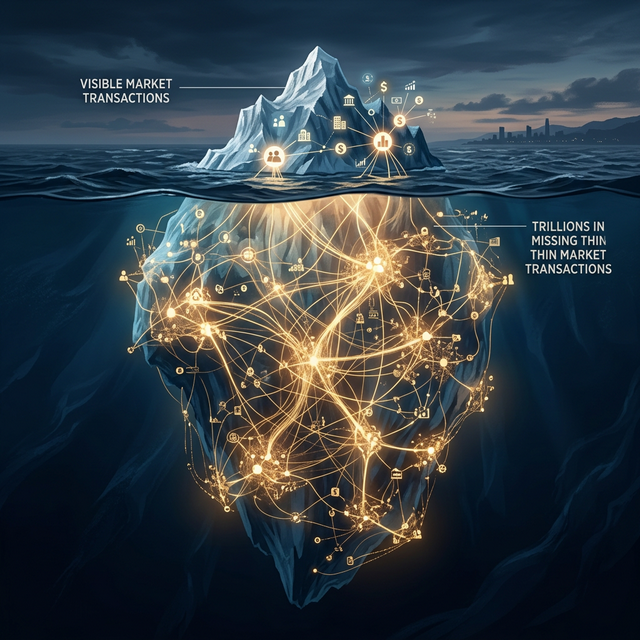

Part 2 of 4 — Why I’m Building Tools for Markets That Don’t Exist Yet
In Part 1, I described the pattern I keep seeing: markets that should work but don’t, because structural forces — from risk and trust deficits to opacity, distance, and offering complexity — prevent willing buyers and willing sellers from ever meeting. The cases look wildly different on the surface — heritage construction, specialty grain, family law — but the x-ray reveals the same anatomy every time.
The natural next question is: so what? Interesting pattern, maybe. But how much commerce is actually missing?
The honest answer is that nobody knows precisely, because you cannot count transactions that never occurred. They leave no trace in the data. No cancelled orders. No abandoned carts. No rejected bids. Just… silence where a market should be.
But we can build a rigorous estimate. And when you do, the numbers are unsettling.
The invisible economy
Every startup pitch deck includes a “Total Addressable Market” slide. The number on that slide always measures the existing market — the transactions that are already happening. For thin markets, the opportunity is the exact inverse: it’s the value trapped inside transactions that don’t happen.
We estimated this sector by sector, applying a four-factor model across the full NAICS taxonomy: sector GDP × transaction intensity × thin market fraction × AI addressability. The methodology is anchored in the transaction cost literature — Wallis and North (1988) measured total transaction costs at roughly 55% of U.S. GDP; our thin market estimate captures the subset where transactions fail entirely rather than merely costing too much.
The headline numbers:
| Scope | Missing commerce |
|---|---|
| Canada | $76–141 billion (2.7–5.0% of GDP) |
| Global | $5.7–10.4 trillion (5.2–9.5% of GDP) |
That is not a market to be captured by a single platform. It is a landscape — distributed across every sector, every country, every trade corridor.
Where the pain concentrates
The damage is not distributed evenly. Five areas account for most of the Canadian total: professional and technical services ($10.6–19.7B), cross-border trade ($16.2–29.7B), manufacturing ($6.8–12.3B), construction ($4.8–8.8B), and labour-market mismatch ($5.9–12.6B). Each has a distinct flavour, but they all share the same underlying forces.
And the global picture has a sharp gradient: the poorer the economy, the more deeply entrenched its thin markets.
In advanced economies, institutional infrastructure — standardised records, credit bureaus, enforceable contracts, searchable databases — compresses thin market friction toward the lower bound. In developing economies, that infrastructure is weak or absent. Consider the Ethiopian fresh produce chain: smallholder farmers face 30% post-harvest losses while middlemen capture 50% or more of the margin. The middlemen are not necessarily predatory — they are the only discovery mechanism available. The market is thin because no one has built the matching infrastructure to make it functional.
As I described in Part 1, these middleman-dependent markets represent one of the two kinds of thin market failure: markets that do function, but partially, expensively, and at enormous human cost. Introducing AI-driven matching into these markets would change life for the existing intermediaries — and that raises legitimate questions. Some may be displaced. But I have reason to believe that AI could also help many of them transition: from manual, high-friction brokerage to higher-value roles as quality validators, trust guarantors, or logistics coordinators within a more efficient system. Those transitions are still important unknowns, and I don’t want to gloss over them. Honest market engineering means acknowledging what we don’t yet know, not just what excites us.
This means the social returns to solving thin markets are highest exactly where the problem is worst — and where the human stakes of getting the transition right are highest too. That inversion matters enormously.
The policy dimension
There is also a geopolitical urgency. Mark Carney has articulated a Middle Powers vision — a coalition of democracies including the EU, CPTPP nations, Japan, South Korea, and Australia with a combined GDP of roughly $37.7 trillion. These nations have signed trade agreements with each other. The legal access exists. What doesn’t exist is the market infrastructure to use it.
Every new trade corridor between a Canadian SME and a buyer in Frankfurt or Osaka starts as a thin market. The participants exist. The desire to trade exists. But the structural forces — now compounded by language barriers, regulatory fragmentation, and 6–14 hours of time zone distance — prevent the transaction from forming. Trade agreements open the door. Thin market forces keep everyone from walking through it.
If Canada is serious about reducing dependence on a single trading partner, thin market engineering is not optional — it’s the infrastructure layer that makes diversification commercially real rather than diplomatically declared.
Why I care about this as more than economics
I said in Part 1 that I’m worried about AI widening existing gaps. This is where that worry becomes concrete. AI’s default trajectory is to make Amazon more efficient and Google’s ad targeting more precise — to further consolidate markets that are already dominant. The winners keep winning.
But the exact same AI capabilities — semantic matching, autonomous brokerage, trusted intermediation — could instead be directed at the long tail: at the Ethiopian farmer, the Saskatchewan barley grower, the family law client in a town with no specialist. The question is not whether the technology exists. It does. The question is whether anyone builds the infrastructure to point it at the right problems.
That’s what DeeperPoint is trying to do. And the design of that infrastructure is the subject of Part 3.